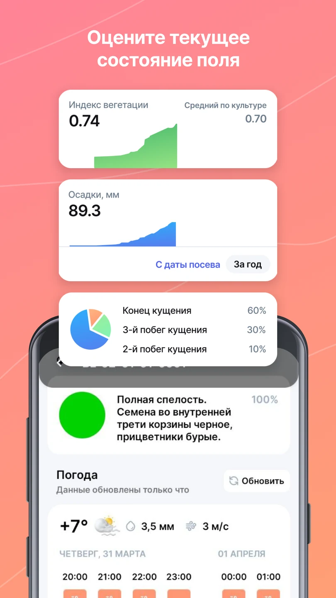
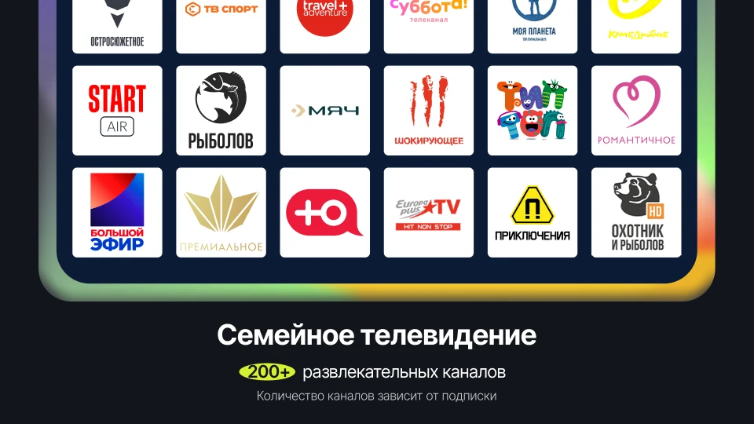
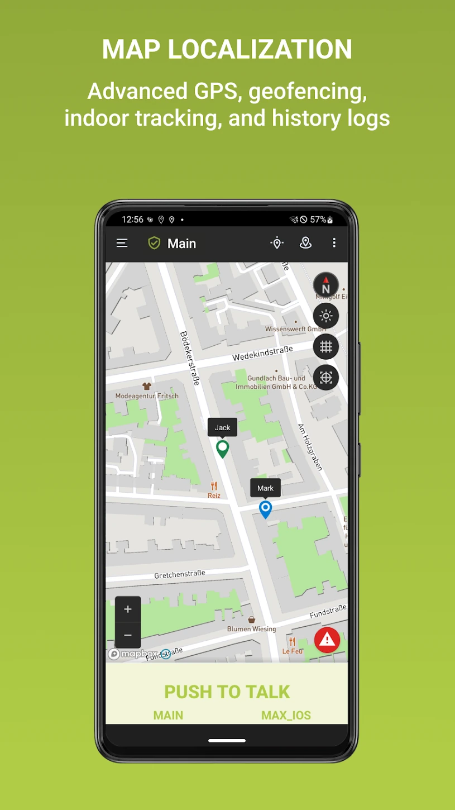
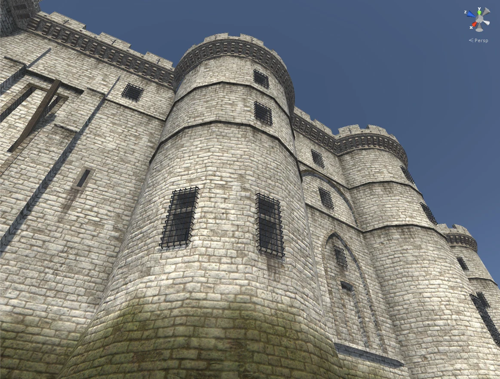

Android · Геосервисы
ГеомирАгро
Карты и осмотры полей для агрономов, в том числе без интернета.
О проектеПортфолио разработчика
Я Андрей Липский. Больше десяти лет разрабатываю приложения — от полевых карт, доступных без сети, до телевидения и дополненной реальности.
Подробнее обо мнеКарты и осмотры полей для агрономов, в том числе без интернета.
О проектеТелевизионная медиатека с каталогом передач и видеоплеером.
О проектеВыбор и бронирование квартир в новостройках для риелторов.
О проектеРация, экстренный вызов и связь с диспетчером на терминалах Zebra.
О проектеПоиск инструментов, цены и оформление покупки в интернет-магазине.
О проектеМобильное приложение о спорте для норвежского рынка.
О проектеКомандная разработка игры с вопросами для нескольких участников.
О проектеБонусы, скидки и персональные предложения в приложениях компаний.
О проектеМобильные AR-реконструкции от Бастилии до крейсера «Аврора».
О проекте
Андрей
Липский
Android-разработчик
Санкт-Петербург · Работаю удалённо
Я разрабатываю приложения, которыми можно пользоваться даже там, где пропадает связь.
Больше пяти лет я работал над «ГеомирАгро». Агроном отмечает проблему прямо в поле, прикладывает фото и продолжает обход. Когда появляется интернет, осмотр отправляется на сервер. Я разрабатывал этот сценарий целиком — от локальной базы на устройстве до экранов на Kotlin.
До этого я делал медиатеку для Android TV, приложения для терминалов Zebra и исторические AR-реконструкции на Unity.


Android · Геосервисы
Агроном проводит осмотр на участке, где может пропасть связь. Приложение сохраняет данные на устройстве и синхронизирует их с сервером при подключении.
Разрабатывал модули полевых осмотров и задач целиком — от схемы хранения до экранов. Проектировал локальное хранение на Room и SQLite, сопровождал миграции базы и оптимизировал SQL-запросы для больших объёмов данных.
Развивал синхронизацию и кэширование, работал с картой на Mapbox. Рефакторил действующие модули параллельно с выпуском новых функций.
Kotlin · Room / SQLite · Coroutines / Flow · Mapbox · WorkManager

Android TV · Медиа
Зритель выбирает передачу в галерее медиасервиса и переходит к просмотру на телевизоре.
Разрабатывал галереи медиаконтента и сортировку. Интегрировал рекламные блоки в видеоплеер. Вместе со вторым Android-разработчиком дорабатывал пользовательские сценарии, исправлял ошибки и готовил новые версии к выпуску.
Kotlin · Android TV · REST API
Android · Недвижимость
Риелтор открывает нужный дом и этаж, смотрит схему квартиры и может перейти к бронированию.
Реализовал динамические списки для перехода между уровнями каталога, схемы квартир, фильтрацию и сортировку. Разработал экран входа, участвовал в реализации бронирования. В команде писали тесты до реализации функций и проверяли код друг друга.
Kotlin · MVP · REST API · Unit Tests


Android · Промышленные устройства
Рация, экстренный вызов и связь с диспетчером на терминалах Zebra.
В команде из трёх Android-разработчиков создавал экраны рации Push-to-Talk, экстренного вызова SOS и связи с оператором. Работал с картами и навигацией, интегрировал сканер штрихкодов в приложение для промышленных устройств Zebra.
Java · Android SDK · Zebra SDK
Android · Ритейл
Поиск инструментов, цены и оформление покупки в интернет-магазине.
Разработал экраны каталога и карточки товаров, реализовал поиск, фильтрацию и сортировку. Работал с динамическими ценами и получением актуальных данных о товарах с сервера. Поддерживал оформление заказа в мобильном приложении.
Java · Retrofit · REST API
Android · Сообщества
Мобильное приложение о спорте для норвежского рынка.
Разрабатывал функциональность Android-приложения для норвежского рынка по заданиям заказчика. В составе Scrum-команды оценивал задачи, планировал спринты и показывал результаты заказчику.
Java · Android SDK
Unity · Игры
Командная разработка игры с вопросами для нескольких участников.
Участвовал в разработке коммерческой Trivia-игры на Unity. Это был один из нескольких проектов, которые наша команда вела параллельно для внешних заказчиков.
Unity3D
Android · Ритейл
Бонусы, скидки и персональные предложения в приложениях компаний.
Реализовал регистрацию и вход, разрабатывал экраны новостей, акций, скидок и бонусов для клиентов разных компаний. Интегрировал push-уведомления и поддерживал обмен данными с сервером.
Java · Android SDK · REST API


Unity · Дополненная реальность
Мобильные AR-реконструкции от Бастилии до крейсера «Аврора».
Крейсер «Аврора», Бастилия, Помпеи и «Дорога жизни» — четыре темы мобильных реконструкций, над которыми я работал. Разрабатывал сцены и взаимодействие с виртуальными объектами, добавлял справочные и мультимедийные материалы. Интегрировал AR-библиотеки и адаптировал приложения для разных устройств, в том числе Google Glass.
Unity3D · C# · Vuforia · Google Glass SDK